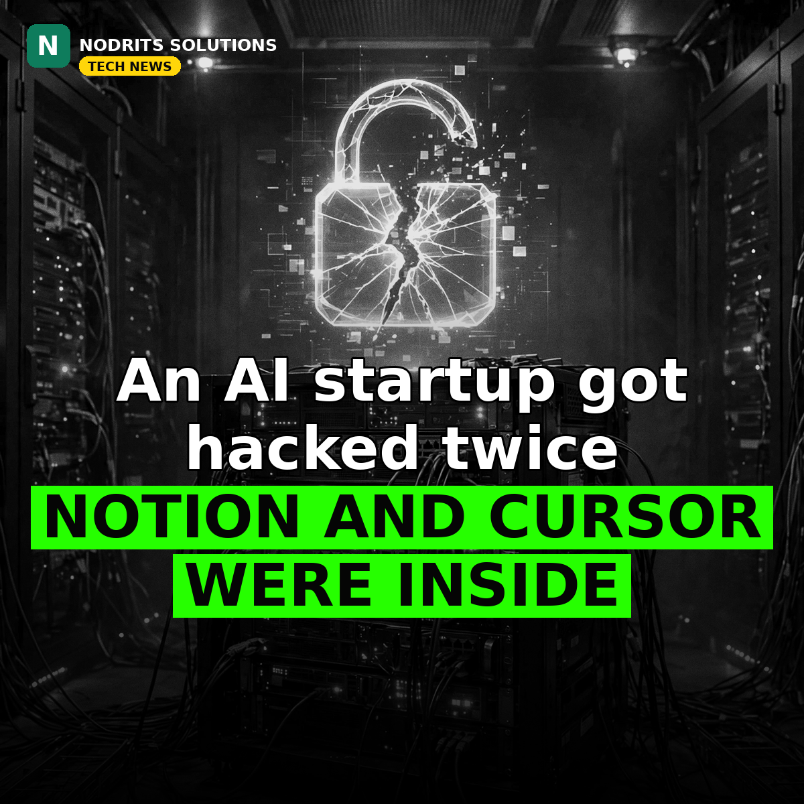

An AI Startup Got Hacked Twice — and Notion and Cursor Were Inside

An AI startup got hacked twice in a matter of weeks — and some of the biggest names in tech were inside. On November 9, 2026, Fireworks AI told customers that hackers had reached customer datasets, partial model weights and billing data in a second intrusion, Bloomberg reported.
What happened
Fireworks AI is an NVIDIA-backed platform that runs AI models for more than 10,000 customers, including Notion and Cursor; it was valued at $17.5 billion in July. The company said the second intrusion happened on October 24: an unauthorized third party breached a third-party cloud provider hosting Fireworks' R&D machines, then reached its development machines and ran an unauthorized workload. Tens of thousands of files were involved. The data reached includes account and billing information — billing and shipping addresses, invoice and payment history, balances and credit usage — and, for a limited set of accounts, secrets, datasets and a subset of incomplete model weights. Payment card numbers are not stored by Fireworks and were not affected. This followed a first incident on October 6, when unauthorized use of internal credentials exposed environment variables holding API keys and tokens in a limited number of accounts. Fireworks says it has seen no further successful access on its customer platform since October 25, found no impact on Inference, its Training SDK or Nexus (which keep no customer data by default), disabled self-serve dataset uploads and downloads, engaged Palo Alto Networks Unit 42 for forensics and notified law enforcement. The company linked the attack to a financially motivated group behind 'LLMjacking' — stealing access to large language models to resell it through illicit routing gateways. A Fireworks spokesperson told Bloomberg the company is 'actively working with our customers to manage the incident, including Notion, Cursor and others.'
Why it matters
AI infrastructure is now a prime target — not for the models alone, but for the compute and the customer data around them. Two breaches in weeks at a company that runs models for 10,000 customers, including the tools millions of developers use daily, shows how fast the AI supply chain became critical infrastructure. And the entry point matters: the second breach came through a third-party cloud provider, not Fireworks itself — your security is only as strong as your vendors' security.
What it means for you
If your business runs on AI tools, this is a vendor-security wake-up call: ask your AI providers how they store your data, whether they keep secrets and datasets, and what happens if their cloud provider is breached. Rotate API keys and secrets regularly, and never store production secrets in evaluation or testing environments — that is exactly what the first Fireworks breach exposed. The cheapest AI service is not the safest one.
The Nodrits take
Fireworks AI was hacked twice in weeks, and customer datasets and model weights were reached. Is the AI industry moving too fast to secure what it is building — or was this just one unlucky vendor? Tell us in the comments on today's post.
Need a website, SaaS product or AI workflow built right?
Nodrits Solutions designs, develops and automates for businesses in Pakistan, the USA, UK, UAE and Saudi Arabia.
Talk to Nodrits →Sources: Bloomberg (November 9, 2026, via Bloomberg Law / Claims Journal); Fireworks AI security bulletin (updated November 9, 2026); Silicon Report (November 9, 2026). The October 24 intrusion date, the data categories and the LLMjacking link are as Fireworks disclosed them; the investigation is ongoing and findings are as reported to date.. Published November 11, 2026.